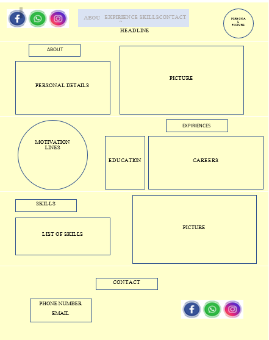

Alon Levin's CV
UX Planning
- קהל יעד: חברות טכנולוגיה ומגייסים
- מטרה ראשית של האתר: ליחצן את אלון לוין ולהציג את קורות חייו למטרת מציאת העבודה הטובה ביותר בשבילו.
- מטרה משנית: להגדיל את החשיפה ואולי לקבל הצעות שלא חשבתי עליהן.
- פעולות שהמשתמש יבצע באתר: יוכל לעבור בין שלבים שונים בחיי בהתאם לצרכיו, במידה והוא מחפש את הנסיון התעסוקתי שלי – לאפשר לו לראות אותו. במידה והוא מחפש את הרקע הצבאי שלי – לדאוג שיהיה נגיש. בנוסף לאפשר לו להשאיר הצעת עבודה \ מייל שאני אצור איתו קשר במידה והוא מעוניין להעסיק אותי.
- מדדי הצלחה: מספר הפניות מחברות טכנולוגיה והצעות העבודה שאקבל.
- עולם תוכן: עולם התוכן אליו אני מכוון הנו עולם הטכנולוגיה וההיי טק. סטודנט לתואר בהנדסת תעשייה וניהול בהתמחות של מערכות מידע. חלום הילדות שלי הוא לשלב את האהבה שלי לכדורגל עם הידע שלי במערכות מידע וב - BIG DATA.
UI Planning

פונטים :
כותרות - orange juice
טקסט אינפורמטיבי - LATO
תיאור תמונות:
תמונה אישית.
תמות רקע.
תמונה של מקלדת שמתארת את עולם התוכן הטכנולוגי אליו אני מכוון.